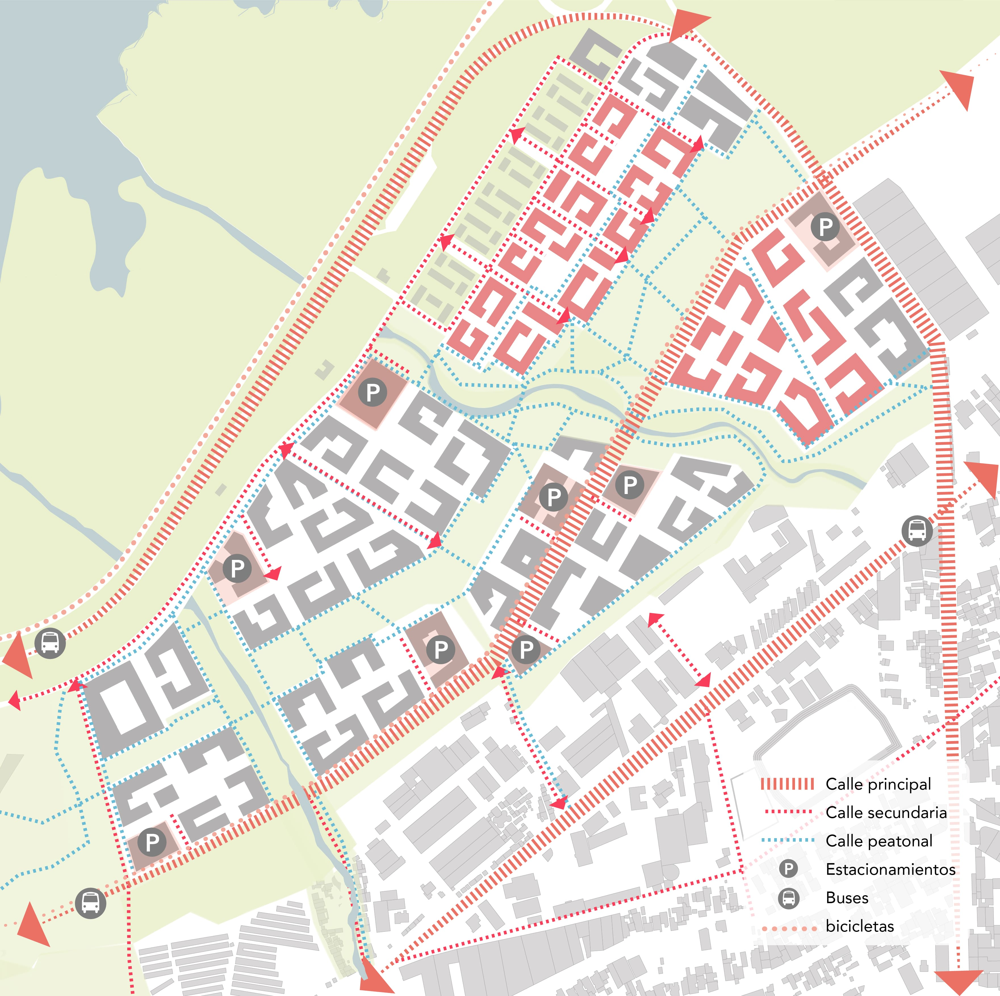
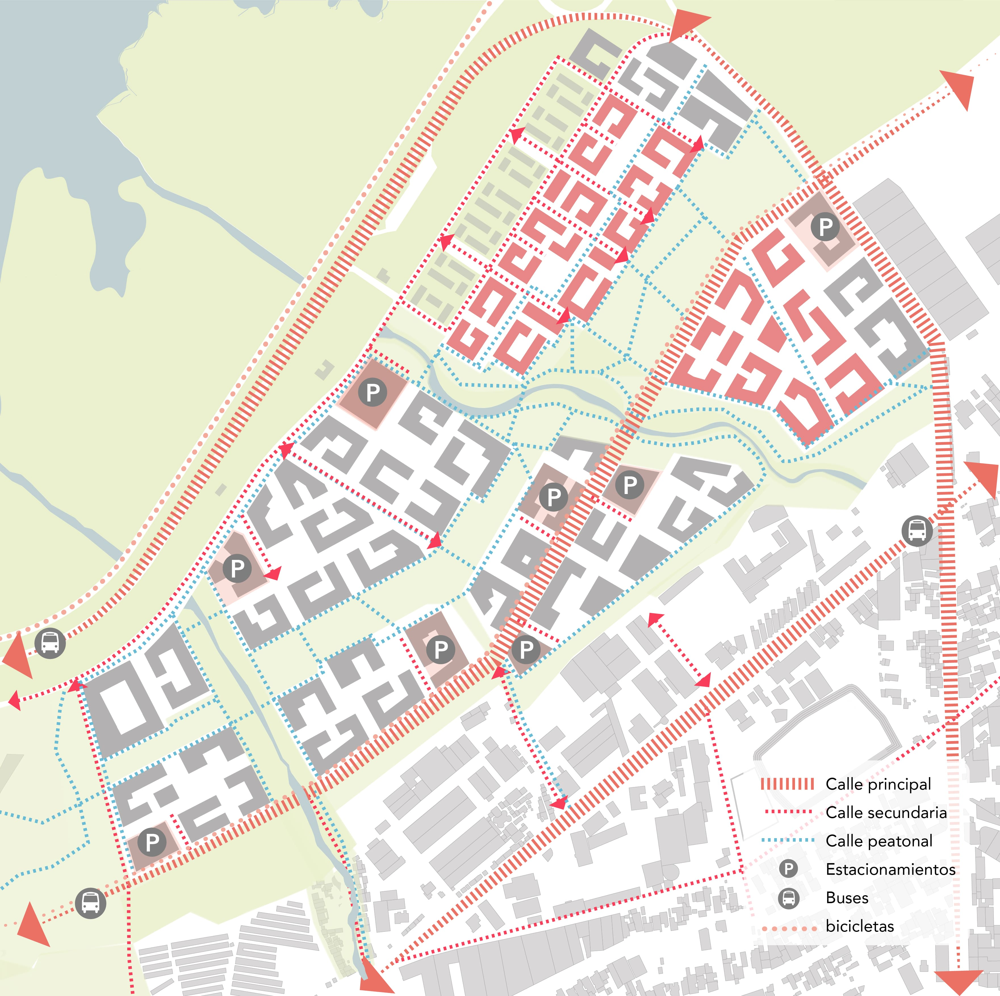
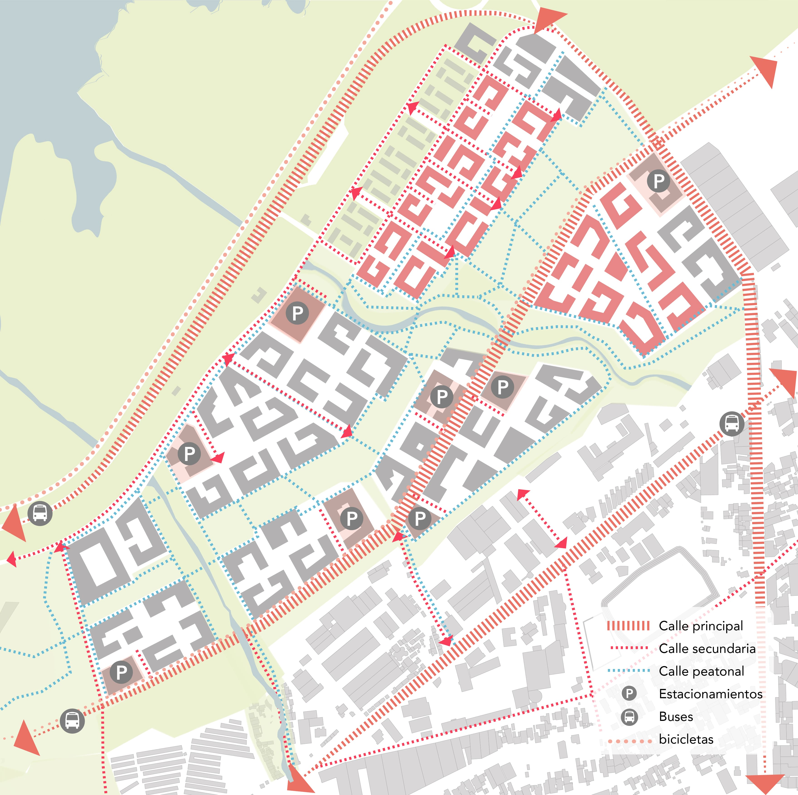

Conducted data research, analysis, and visualization, along with strategic planning, for Superwien. Urban project funded by the World Bank. November 2023.

The area under analysis encompasses informal settlements. The project aims to relocate the people living in the area and create a new Eco-District combining private and public development. The analysis of the future neighbourhood aimed to address floading issues, demography and density, green spaces and accesibility.
The strategy for the area was formulated based on the preceding analysis, which included climate analysis: floading analysis and heat island analysis of the proposed project. Subsequently, a proposal outlining the recommended phases for the project was developed.

Softwares used: QGIS, Illustrator, Photoshop and Indesing